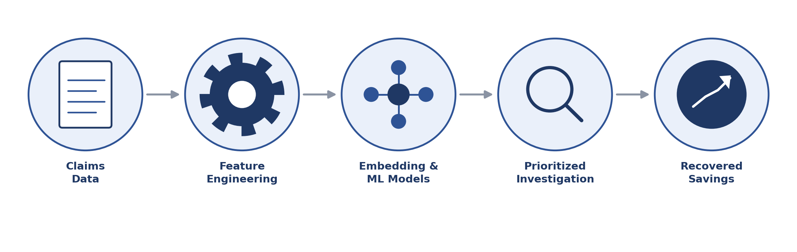
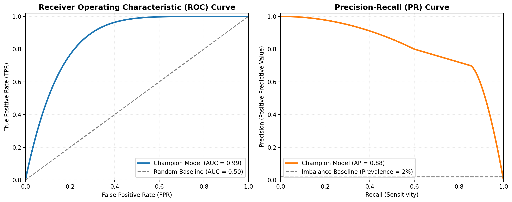
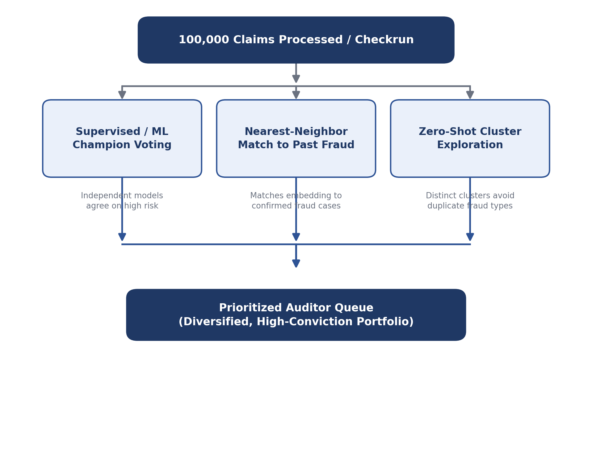
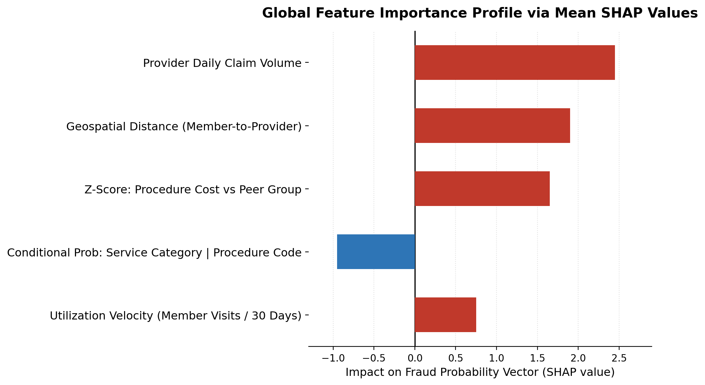

Modernizing Healthcare Fraud Detection via Machine Learning
An end-to-end Databricks pipeline for prioritizing high-risk healthcare claims before payout.

The Financial Impact of Healthcare Fraud
In the United States, fraud, waste, and abuse (FWA) within the healthcare ecosystem is a significant financial drain. Official estimates from the Centers for Medicare & Medicaid Services (CMS) Improper Payments Fact Sheets note that improper payments across major programs consistently exceed $100 billion annually. The National Health Care Anti-Fraud Association further indicates that bad-faith fraud drives up premiums for consumers and diverts critical funds away from patient care.
The CMS framework categorizes the most severe provider-driven fraud schemes into distinct operational patterns:
- Phantom billing: Submitting claims for medical services, visits, or equipment supplies that the patient never actually received.
- Upcoding: Intentionally billing for a significantly more complex or expensive service than what was actually rendered to the patient.
- Unbundling: Submitting multiple separate billing codes for a group of minor procedures that are legally covered under a single, comprehensive global billing code.
- Medical identity theft or collusion: Misusing unique patient or provider identification information to fabricate valid-looking medical claims.
Traditionally, detecting these anomalies relies heavily on Special Investigation Units (SIUs) who manually review claims based on static, rule-based heuristics. While effective to an extent, these rules are rigid, generate high false-positive rates, and struggle to scale as bad actors adapt their tactics.
To bridge this gap, an end-to-end machine learning workflow was built for a healthcare client based in New England to optimize the manual review process. Instead of replacing human investigators, the system optimizes their time by serving them a highly accurate, prioritized list of the top candidates most likely to contain fraudulent activity.
Following full deployment, this project delivered the following measurable outcome for the client:
| Project Outcome | Result |
|---|---|
| Reduction in fraudulent payout | 35% |
| Direct savings intercepted pre-payout | $10M |
Data Synthesis and Feature Engineering
Fraud footprints spread across the entire ecosystem of a claim. To build a robust predictive model, raw claim data was ingested and enriched using a feature engineering pipeline leveraging the Databricks Feature Store.
Provider-Level Behavior
- Conditional probabilities: Mapping the likelihood of certain behaviors, such as the probability of a specific service category given a procedure code, or a place of service given a procedure code. Deviations from these norms immediately flag an anomaly.
- Billing trends and density: Tracking how often a provider bills specific procedure codes over time to catch sudden spikes or upcoding, alongside tracking the total number of claim lines a provider submits in a single day to identify impossible billing volumes.
Member and Geospatial Anomalies
- Geospatial distance: Calculating the physical distance between a member ZIP code and the provider location. A member traveling abnormally long distances for routine services serves as a key indicator for identity theft or prescription padding.
- Utilization velocity: Tracking the number of visits a member has made in recent timeframes to catch explosive utilization.
Aggregate Network Features
- Statistical deviations (Z-scores): Calculating Z-scores for member, procedure, and provider lines to isolate claims and total costs per member that deviate sharply from the peer group average.
- Network breadth: Evaluating the number of distinct providers billing for a specific procedure for a single member to identify potential collusion.
Addressing Extreme Class Imbalance
One of the primary hurdles in fraud detection is the lack of clean, historical labels. True fraud is rare; historical audits by the investigation team show that the baseline estimated rate of true fraud is roughly 2% of the flagged data pool. This creates an extreme class imbalance problem: 98% normal vs. 2% anomalous.
To train a highly predictive model without it defaulting to predicting non-fraud every time, a dual strategy was implemented:
- Bootstrapping labels via a heuristic aggregator: A primary classification model analyzed the aggregate scores of all existing manual heuristics to generate a continuous probability score, or soft label, representing the baseline likelihood of FWA.
- Cost-sensitive learning with a weighted loss function: When passing these soft labels into the downstream machine learning models, the objective function was adjusted. The weighted loss mechanism heavily penalized the model for misclassifying the minority fraud class, forcing the classifiers to map boundaries around subtle, high-risk fraudulent behavior rather than taking the easy path of optimizing for majority-class accuracy.
Multi-Model Architecture Matrix
To maximize predictive power from the enriched features, feature representation was decoupled from the classification stage. The pipeline utilizes three distinct embedding strategies to capture complex entity concepts, passing those embeddings into four separate supervised classifiers and three unsupervised outlier detection models.
| Component | Techniques / Frameworks Used | Purpose in the Pipeline |
|---|---|---|
| Embedding models | Autoencoder; MLP latent space from the last layer of a tuned MLP; entity embeddings | Transforms high-dimensional categorical, member, and provider data into dense, low-dimensional vectors that capture underlying semantic similarities. |
| Supervised classifiers trained on embedding models | Random forest; gradient boosting trees; histogram-based gradient boosting; MLP | Learns complex, non-linear boundaries across all three embedding spaces to predict the soft-label fraud probability. |
| Unsupervised outlier models for anomalous behavior | One-class SVM; isolation forest; local outlier factor | Surfaces anomalous claims for examination alongside the supervised model outputs. |
Model Performance and Selection Framework
When evaluated directly against the heuristic-driven soft labels, the finalized ensemble prediction exhibited strong classification capabilities, yielding an average precision (AP) of 0.88 on the precision-recall curve and an area under the ROC curve (ROC-AUC) of 0.99. This demonstrates that even with a native 2% class imbalance, the weighted-loss supervised classifiers sharply segregate fraudulent signals from standard medical billing variants.

In a typical production checkrun, the system processes a dataset of 100,000 total claims. Because the investigation team has finite operational bandwidth, the engine filters that data down to an actionable pool of exactly 2,000 high-priority claims per checkrun to deliver to the audit team. To ensure this batch yields the highest density of real anomalies, a multi-pronged selection framework was designed. The diagram below outlines how the full claim pool is narrowed down to a final, prioritized queue.

- Supervised consensus: Supervised matrix champion models identify top candidates where independent models agree on a high fraud probability.
- Nearest-neighbor matching: Using generated embedding spaces, direct nearest-neighbor lookups are run against historically confirmed fraudulent claims to flag identical behavioral signatures.
- Zero-shot fraud clustering: To ensure variety, zero-shot clustering is applied to the fraudulent embedding space to pull top items from distinct clusters, presenting investigators with a diversified portfolio of anomalies.
Enterprise-Grade Model Interpretability
If a machine learning model flags a claim but cannot explain why, an investigator cannot act on it confidently. To bridge the gap between data science and operational auditing, a two-tiered interpretability framework was deployed.
The Analytical Interpretability Report
For every 2,000-claim checkrun package, an automated analytical report is delivered to the fraud investigation team. This report provides macro and micro context including feature segmentation, temporal fraud trends, top providers driving anomalies, and historical baseline confidence intervals so investigators can gauge variance.
Deep-Dive SHAP Analysis
While the analytical report provides the macro view, SHAP (SHapley Additive exPlanations) values serve to showcase the exact mathematical contribution of each feature to a specific score. Internally, the data science team uses SHAP to monitor feature mechanics, ensuring that models learn legitimate fraud signals rather than latching onto system noise.

MLOps: Continuous Drift Monitoring
Fraud detection is a moving target. As soon as a system flags a specific pattern, tactics pivot, creating concept drift. Concurrently, seasonal trends, policy changes, and new guidelines can cause data drift. To prevent pipeline degradation, continuous tracking is implemented:
- Tracking Population Stability Index (PSI): Automated monitors track the PSI of critical embedding spaces and high-importance features. If a distribution shifts significantly, such as PSI > 0.2, it indicates incoming data is changing compared to the training baseline.
- Retraining triggers: When sustained drift or a sharp shift in fraud pattern concentration is detected, it triggers a retraining workflow, refreshing embedding models and classifiers.
Leading Technical Indicators Monitored
- Overbilling rate by provider: Spikes in average billing amounts within a specific provider peer group.
- High-risk line concentration rate: The density of highly suspicious claim lines bundled into single submissions.
- Amount trends by procedure: Uncharacteristic surges in total payouts associated with specific medical billing codes.
Bridging the Gap with Business KPIs
A highly accurate machine learning model must translate into tangible business value. The platform uses a balanced scorecard of KPIs to measure operational and financial impact over legacy heuristics.
| Data Science Metrics | Operational Business KPIs |
|---|---|
| Precision / Recall / ROC-AUC | Hit rate / Escalation rate / False positive rate / Recovery rate |
The primary metric: hit rate optimization. Manually auditing an unfiltered pool meant investigators wasted valuable time. By serving them a curated, prioritized 2,000-claim queue through this framework, the platform radically increased the hit rate: the percentage of reviewed claims that turn out to be fraudulent.
Investigator escalation rate. This is the rate at which an initial reviewer flags a candidate to senior management or legal for formal investigation. A rising escalation rate proves the model is surfacing high-conviction, high-severity fraud rather than minor billing noise.
False positive rate (FPR) reduction. By driving down false positives, the system saved hundreds of collective human hours, preventing fatigue among the investigative team and improving morale.
Case closure rate and recovery velocity. This measures how quickly an investigator can confidently close a case thanks to comprehensive analytical interpretability reports.
Financial recovery rate ($). This is the ultimate bottom-line metric: tracking the actual dollar volume recovered or saved from fraudulent claims because the system intercepted them before payout.
Conclusion and Next Steps
Moving from a manual, heuristic-driven audit process to a layered machine learning pipeline on Databricks allowed the system to scale fraud detection across massive, high-dimensional claims data. Weighted-loss training, dense behavioral embeddings, and an ensemble-driven champion voting matrix worked together to intercept non-compliant and fraudulent claims before payout.
The roadmap ahead focuses on two initiatives to stay ahead of evolving fraud tactics.
Plain-English Explanations via Generative AI
Even a highly precise model still requires an auditor to verify why a claim was flagged. To close that gap, LLMs are being deployed to convert raw feature values and SHAP outputs into concise, investigator-ready summaries. For example:
This claim was flagged as high priority because Provider X billed an unusually high volume of billable codes within a single day, combined with an uncharacteristic spike in upcoding for procedure code 99214 relative to their local peer group.
This gives investigators immediate context, removing the need to interpret raw model output manually.
Stronger Vector Spaces via Contrastive Learning and Attention
Two architectural upgrades are planned to catch more complex, interconnected fraud patterns:
- Self-supervised contrastive learning: Grouping normal billing patterns together while pushing anomalies apart in the embedding space, sharpening separation between fraud and non-fraud even under extreme class imbalance, where labeled fraud examples are scarce.
- Attention-based deep learning: Adding transformer-style attention layers to model dependencies across claim lines and patient timelines, enabling detection of fragmented fraud schemes spread across multiple providers: patterns standard tabular models tend to miss.